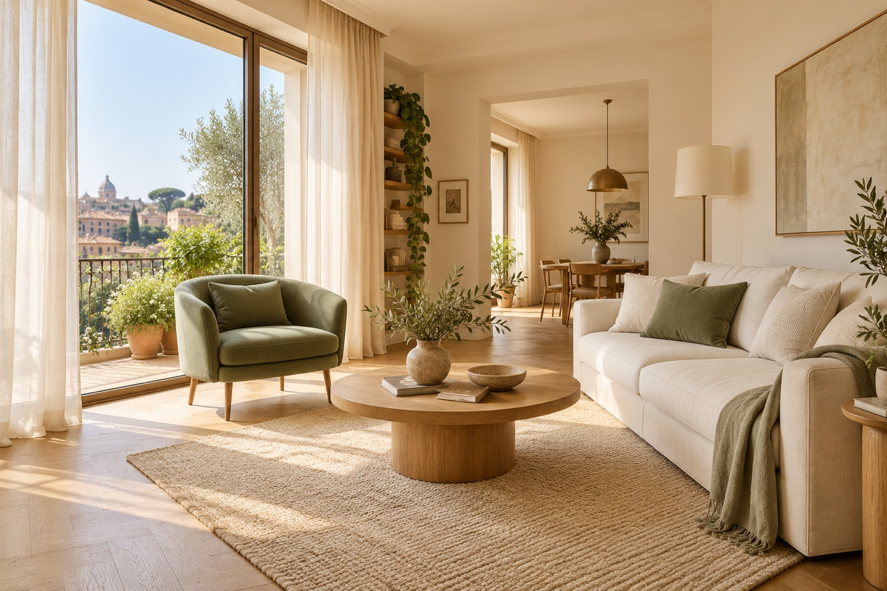

Mostra gli spazi,
con chiarezza.
Le immagini aiutano chi guarda a comprendere gli ambienti. Il percorso foto AI è in preparazione: ti aiuterà a capire quali immagini mancano e cosa migliorare nelle foto leggibili.
Prepara il tuo annuncio di vendita o affitto con l’aiuto dell’intelligenza artificiale e il confronto con un consulente immobiliare.


Le immagini aiutano chi guarda a comprendere gli ambienti. Il percorso foto AI è in preparazione: ti aiuterà a capire quali immagini mancano e cosa migliorare nelle foto leggibili.
Una descrizione coerente con la casa aiuta a comunicarne le caratteristiche. Il percorso annuncio raccoglie il materiale per una risposta preparata con assistenza AI.
La preparazione comprende informazioni disponibili, materiali mancanti e dubbi da chiarire. Il percorso checklist AI è in preparazione: servirà a organizzare i prossimi passi via email.
Foto buie o confuse possono far passare oltre il tuo annuncio, prima ancora di conoscere la casa.
Dettagli mancanti o poco chiari possono generare domande aggiuntive e incomprensioni.
Informazioni e materiali da recuperare all’ultimo momento possono richiedere di correggere l’annuncio e riorganizzare i prossimi passi.
Come presentarla, quali aspetti approfondire e come ragionare sul prezzo o sul canone che hai in mente: porta le tue domande al nostro consulente.
Puoi chiedere direttamente un confronto gratuito: bastano nome, email, comune e argomento. Non servono foto o una bozza. La disponibilità viene confermata via email.
La bozza AI è un risultato da usare e verificare prima di pubblicare. La consulenza è facoltativa: puoi migliorare il tuo annuncio anche senza richiederla.